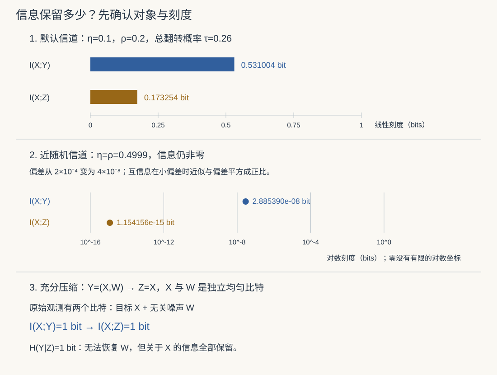

本页目录
信息论 II · KL 散度、互信息与数据处理
熵回答“一个分布本身有多不确定”；本页再问两件事：两个分布相差多少，以及看到一个变量后另一个变量少了多少不确定性。KL 散度、交叉熵、最大似然、互信息与数据处理不等式，都是在回答同一个问题：一次预测错了多少，哪些信息在加工后还留得住？
学习层：先把“加工”想清楚
想象你在接收一个只会发 0 或 1 的朋友的消息。第一次收到的是 \(Y\)，你再把它交给一个会翻转比特的中继站，得到 \(Z\)。中继站可以改变表示，却不能凭空知道朋友原来发了什么。读完本页前，先写下三条判断：
- 在默认的二元信道参数下，第二段噪声会让 \(I(X;Z)\) 与 \(I(X;Y)\) 怎样比较？
- 如果第二段以概率 \(1/2\) 翻转，\(Z\) 还会不会保留关于 \(X\) 的信息？
- 仅用 \(Y\) 做确定或随机后处理，什么时候可能保持信息量不变？
下面的实验先锁住答案，再显示解析条件行、KL 账本和固定刻度图。它不抽样，所有读数由解析公式计算，并以有限位数显示。
无 JavaScript 时的静态读法：令 \(X\sim\operatorname{Bernoulli}(1/2)\)，\(Y=X\oplus N_\eta\)，\(Z=Y\oplus N_\rho\)，其中 \(X,N_\eta,N_\rho\) 相互独立，\(N_p\sim\operatorname{Bernoulli}(p)\)，\(\eta,\rho\in[0,1/2]\)，并令
端点约定 \(h_2(0)=h_2(1)=0\)。因为 \(Y\)、\(Z\) 都是均匀比特，
默认 \(\eta=0.1,\rho=0.2\) 时，\(\tau=0.26\)，所以
| \(\eta\) | \(\rho\) | \(\tau\) | \(I(X;Y)\)（bits） | \(I(X;Z)\)（bits） | 读法 |
|---|---|---|---|---|---|
| 0.1 | 0.2 | 0.26 | 0.531004 | 0.173254 | 默认：严格损失 |
| 0.1 | 0 | 0.1 | 0.531004 | 0.531004 | \(Z=Y\)，可恢复 |
| 0.1 | 0.5 | 0.5 | 0.531004 | 0 | 第二段完全打散 |
| 0.5 | 0.2 | 0.5 | 0 | 0 | 第一次已经没有信息 |
| 0 | 0.2 | 0.2 | 1 | 0.278072 | 无首段噪声 |
默认信道的几行是
| 条件 | \(P(0)\) | \(P(1)\) |
|---|---|---|
| \(P(Y\mid X=0)\) | 0.9 | 0.1 |
| \(P(Y\mid X=1)\) | 0.1 | 0.9 |
| \(P(Z\mid Y=0)\) | 0.8 | 0.2 |
| \(P(Z\mid Y=1)\) | 0.2 | 0.8 |
并且
条件分布经过第二个 BSC 后，KL 也收缩：
边界要照实写：\(\eta=0,\rho=0\) 时两侧条件分布互不重叠，两个 KL 都是 \(+\infty\)，不能把它格式化成 0 或 NaN；若 \(\eta=0,\rho>0\)，第二段噪声会让输出支持重叠，右侧可以变成有限值。
这三个问题的共同检查法是：先问随机变量的联合分布和条件分布是什么，再问支持是否匹配，最后才把“看起来更随机”翻译成比特数。请在条件概率表上指出哪一行被混合，再在加权账本中检查变化；“加工不增信息”需要联合分布满足相应条件。
1. 单位、对象与 KL 散度
1.1 这页的对数是 \(\log_2\)
正文的熵差和等号推导先限于有限离散字母表；可数与连续对象另列边界。统一约定
因此一次事件 \(x\) 的 surprisal 是 \(-\log_2P(x)\) bits；若改用自然对数，所有数值会乘上 \(\ln2\)，单位变成 nats。端点约定为 \(0\log 0=0\)，因为相应项取极限为 0。不要在同一条账本中混用两个底数。
给定两个定义在同一字母表上的概率分布 \(P,Q\)，KL 散度（相对熵）为
它是“数据真的来自 \(P\)，却用 \(Q\) 做对数评分或理想编码”时的平均额外代价。这个解释是期望意义下的代价，不是说每个样本都会多花一个整数 bit。
支持边界必须先处理。 若某个 \(x\) 满足 \(P(x)>0\) 而 \(Q(x)=0\)，则
若 \(P(x)=0\)，该项按 \(0\log(0/Q(x))=0\) 处理；\(P\) 的零质量点不会贡献 KL。测度语言中，这个边界就是 \(P\) 不绝对连续于 \(Q\)。连续密度版本也必须相对于同一支配测度写出，并先检查 \(P\ll Q\)。
1.2 Gibbs 不等式：非负性从哪里来
在本页的有限字母表证明中，\(P,Q\) 是归一化概率分布；若 \(P\) 不绝对连续于 \(Q\)，上面的支持边界已经给出 \(+\infty\)。其余情形假设 \(P\ll Q\)，此时有限字母表上有关对数比值自动可积。令 \(S=\{x:P(x)>0\}\)，则
第一步是凹函数 \(\log\) 的 Jensen 不等式，最后一个不等号提醒我们：\(Q\) 可以在 \(P\) 没有支持的地方浪费质量。于是 \(D(P\Vert Q)\geq0\)。在上述“同一支配测度、概率分布、KL 定义良好”的范围内，
作为概率测度相等。等号要求 Jensen 取等，且 \(Q/P\) 在 \(P\) 的支持上为常数；再结合归一化，就得到该常数为 1，且 \(Q\) 不能在支持外留下额外质量。若支持边界导致 KL 为 \(+\infty\)，当然不可能出现零。
这就是 Gibbs 不等式。它证明了“非负”和“零 iff 相等”，但没有证明对称性，也没有给出三角不等式。
1.3 不对称性与两个方向的直觉
一般
例如 \(P=(1/2,1/2)\)、\(Q=(0.99,0.01)\) 时，
前一个方向会重罚“\(P\) 经常出现而 \(Q\) 认为几乎不可能”的事件；换方向后，\(Q\) 自己已经很少走到第二个位置，账本的平均方式完全变了。若 \(Q=(1,0)\)，而 \(P=(1/2,1/2)\)，前向 KL 直接落在支持边界上，为 \(+\infty\)。
常见的“前向 KL mode-covering、反向 KL mode-seeking”是有用但有条件的模型直觉：在一个受限的单峰模型族中，最小化 \(D(P\Vert Q)\) 往往会为了覆盖 \(P\) 的多个峰而铺宽 \(Q\)；最小化 \(D(Q\Vert P)\) 往往会避免把质量放进 \(P\) 很小的区域，优化结果可能只贴住一个峰。这不是对所有分布、模型族和优化算法的普遍定理。 模型容量、参数化、初始化、局部最优、权重和正则化都可能改变现象；方向本身只说明“谁在取平均、谁的支持必须被覆盖”。
KL 也不是距离：不对称，且一般不满足三角不等式。叫“散度”而不是“距离”是在提醒我们不要把欧氏几何的直觉偷偷带进来。
2. 交叉熵、对数损失与 MLE
交叉熵定义为
把 \(\log(P/Q)\) 拆开即可得到
所以当数据分布 \(P\) 固定且 \(H(P)<\infty\) 时，最小化交叉熵与最小化前向 KL 等价；\(H(P)\) 是不可由模型参数改变的基线。对数损失之所以适合概率预测，正是因为它在每个错误的低概率事件上留下了可加、可比较的代价。
可数字母表上，非负扩展值恒等式 \(H(P,Q)=H(P)+D(P\Vert Q)\) 仍成立，但若 \(H(P)=\infty\)，所有交叉熵都是 \(\infty\)，无法再“减去固定基线”来比较模型。例如 \(Q=P\) 时 KL 为 0，交叉熵却仍可为无穷。优化等价所需的有限性是实质条件。
2.1 有限字母表上的经验 MLE 等价
给定有限字母表上的样本 \(x_1,\ldots,x_n\)，经验分布为
对一个概率模型族 \(Q_\theta\)，以下经验平均恒等式对任意样本都成立；要把概率乘积称为这批数据的联合似然，还需假设样本在模型下独立同分布（或明确采用这一乘积似然）。先设模型在观测符号上给出正概率，
因此
最后一个等号只是在有限字母表上减去了与 \(\theta\) 无关的 \(H(\widehat P_n)\)。若某个观测符号被模型赋予 0 概率，平均对数似然为 \(-\infty\)，同一个支持边界会把 KL 写成 \(+\infty\)。在上述乘积似然设定下，三个目标拥有相同的最优参数集合；集合也可能为空，例如参数域不闭而最优值只能在边界逼近。等价不保证极值存在，也不保证优化算法能找到它。
2.2 连续数据的一个重要刹车
不要把上面的等式不加检查地搬到连续数据。连续样本的经验分布是若干 Dirac 原子，而 \(Q_\theta\) 若具有 Lebesgue 密度，则对有限样本集合赋予概率 0。因此 \(\widehat P_n\not\ll Q_\theta\)，字面上的 \(D(\widehat P_n\Vert Q_\theta)=\infty\)。两个概率测度总有共同支配测度，例如 \(\widehat P_n+Q_\theta\)；问题是绝对连续性失败，不能靠换支配测度消除。
在独立同分布密度模型下，连续 MLE 直接优化观测点上的经验平均负对数密度
或谈真实连续分布 \(P\) 与密度 \(q_\theta\) 的交叉熵 \(-\mathbb E_P\log q_\theta(X)\)。这仍然是预测评分和交叉熵的故事，但不要把“经验原子对连续密度的字面 KL”当作自动成立的公式。密度不是点概率，密度可以大于 1，负对数密度也可以为负；换计量单位会改变它的数值。使用固定参考测度并检查可积性与模型的极值存在性。
3. 互信息：知道一边，另一边少猜多少
对有限离散随机变量 \(X,Y\)，互信息定义为联合分布与“假装独立”的乘积分布之间的 KL：
把项按熵展开，得到三种等价读法：
它是对称的，因为“联合分布偏离独立分布”不区分哪一边先写；它以 bits 为单位，表示知道 \(Y\) 后 \(X\) 的平均 log-loss 减少量。由 KL 非负性（这一点也适用于一般测度定义）
也就是恰好独立。互信息是依赖量，不是因果效应，也不是相关系数；它不需要线性关系。
可数字母表上的互信息仍应由 KL 定义；\(I=H(X)-H(X\mid Y)\) 只在右侧不是 \(\infty-\infty\) 时使用。例如 \(X,Y\) 独立且都具有无穷熵时，KL 明确给出 \(I=0\)，而三个无穷熵相减没有意义。
3.1 一个相关系数看不见的依赖
令 \(X\) 在 \(\{-1,0,1\}\) 上均匀，\(Y=X^2\)。对称性使得 \(\operatorname{Cov}(X,Y)=\mathbb E[X^3]-\mathbb E[X]\mathbb E[Y]=0\)，但 \(Y\) 并不独立于 \(X\)，因为 \(Y\) 完全由 \(X\) 决定。这里 \(P(Y=0)=1/3\)、\(P(Y=1)=2/3\)，所以
检查方法是：给你 \(X\)，你不需要再猜 \(Y\)；即使线性相关为 0，预测不确定性仍然被完全消掉。
3.2 确定函数的边界
若 \(Y=f(X)\)，且 \(X,Y\) 是离散变量、\(H(Y)<\infty\)，则 \(H(Y\mid X)=0\)，因而
这句话的范围很窄：它不是“任何确定关系都给出一个普通的有限微分熵公式”。若 \(X,Y\) 连续且 \(Y=f(X)\)，联合分布集中在一条图像上，往往相对于 \(P_XP_Y\) 是奇异的，按 KL 定义的互信息可能为 \(+\infty\)。此时条件微分熵的形式运算可能出现 \(-\infty\)，不能机械地写成 \(H(Y)-0\)。例如 \(X=Y\sim U[0,1]\)：联合分布在对角线上质量为 1，而独立乘积分布对这条线质量为 0，所以 \(I(X;Y)=\infty\)。若改为观察 \(Z_k=\lfloor2^kX\rfloor\)（端点 \(X=1\) 是零概率事件），则 \(I(X;Z_k)=k\) bits；量化精度改变了观测变量，有限读数与无穷极限可以同时成立。
4. 链式法则与数据处理不等式
4.1 KL 链式法则
联合分布的比值可以按条件分解：
取 \(P_{XY}\) 的期望，就得到
有限字母表上按支持约定成立，条件行只需在相应正边缘概率处定义；一般标准 Borel 空间上也有以条件 KL 为基础的非负扩展值版本。它说总 log-loss 差异 = 先看 \(X\) 的差异 + 已知 \(X\) 后条件预测的平均差异。
把这条分解用于互信息，得到互信息链式法则：
其中
所以多看一份数据不会减少“联合观测里包含的信息”：\(I(X;Y,Z)\geq I(X;Y)\)。注意这是把 \(Y,Z\) 一起给解码器；若把 \(Y\) 压成一个较短的 \(Z\)，方向就要用数据处理不等式判断。
4.2 DPI 需要 Markov 条件
若 \(X\to Y\to Z\) 是 Markov 链，意思是
也就是说，给定 \(Y\) 后，第二步不能再偷偷读取 \(X\) 的旁路信息。于是 \(I(X;Z\mid Y)=0\)，链式法则给出
从而得到数据处理不等式（DPI）
确定函数 \(Z=f(Y)\) 和独立随机噪声后处理都是这个条件的例子。若 \(Z\) 还使用了 \(X\) 的额外观测，Markov 条件被破坏，就不能把 DPI 套上去；“后处理不能创造信息”不是脱离概率图的口号。
当 \(I(X;Y)<\infty\) 时，DPI 等号的精确条件是
在统计语言中，\(Z\) 对 \(X\) 来说是相对于 \(Y\) 的充分统计量：知道 \(Z\) 后，原始 \(Y\) 不再为判断 \(X\) 提供额外信息。若 \(Y\) 可以由 \(Z\) 准确恢复，这是一个直接的充分条件；但恢复 \(Y\) 不是必要条件，压缩后的等价类也可能已经充分。在有限信息设定下，条件互信息严格为正才说明关于 \(X\) 的信息确实有损；丢掉与 \(X\) 无关的随机细节，可以保持等号。
为什么不能省略有限性？ 取可数随机变量 \(U\) 满足 \(H(U)=\infty\)，另取独立均匀比特 \(V\)，令 \(X=Y=(U,V)\)、\(Z=U\)。例如可令 \(P(U=n)\) 正比于 \(1/[n(\ln n)^2]\)，\(n\ge2\)；归一化级数收敛，而熵级数含有发散的 \(1/(n\ln n)\) 主项。此时 \(X\to Y\to Z\)，
两边同为无穷仍丢掉了一个比特。链式法则是合法的 \(\infty=\infty+1\)，不能把它改成 \(\infty-\infty=1\)。
5. 一个可算的信道：BSC 与信息账本
令 \(X\sim\operatorname{Bernoulli}(1/2)\)，\(X,N_\eta,N_\rho\) 相互独立，\(N_p\sim\operatorname{Bernoulli}(p)\)，且
这是 \(X\to Y\to Z\) 的 Markov 链。对称性使 \(Y\)、\(Z\) 都是均匀比特；条件熵是一个二元噪声的熵：
其中两次翻转不同则总共翻转一次，因此
于是
在 \([0,1/2]\) 上，\(h_2\) 严格递增，且 \(\tau-\eta=\rho(1-2\eta)\ge0\)，所以本模型恰在 \(\rho=0\) 或 \(\eta=1/2\) 时取等号，其余参数严格损失。具体说，\(\rho=0\) 时 \(Z=Y\)，信息保持；\(\rho=1/2\) 时 \(Z\) 与 \(X\) 独立，\(I(X;Z)=0\)；\(\eta=1/2\) 时第一次观察已经没有关于 \(X\) 的信息，后面也没有东西可恢复。
还有一个适合逐行核对的恒等式：
它不是把每个条件 KL 都当成互信息，而是按 \(p(x)\) 加权。对默认 \(\eta=0.1\)，两行条件分布是 \((0.9,0.1)\) 与 \((0.1,0.9)\)，边缘分布为 \((0.5,0.5)\)；两行 KL 相同，各乘 \(1/2\) 后相加，正好得到 \(0.531004\) bits。
第二个 BSC 也可直接看成一个随机核 \(K_\rho\)。对任意两个输入分布，KL 数据处理给出
一个直接证明来自 log-sum 不等式：固定输出 \(z\)，对 \(a_y=P(y)K(z\mid y)\)、\(b_y=Q(y)K(z\mid y)\) 使用
它本身由归一化后的 Gibbs 不等式乘以 \(\sum a_y\) 得到；零和与支持不匹配按相同极限约定处理。再对 \(z\) 求和，利用 \(\sum_zK(z\mid y)=1\)，左侧回到 \(D(P\Vert Q)\)，右侧正是输出 KL。
取 \(P=P(Y\mid X=0)\)、\(Q=P(Y\mid X=1)\)，就得到实验中的条件行 KL 收缩。支持边界仍然优先：输入 KL 可能为 \(+\infty\)；经过带正噪声的第二段后输出 KL 可以有限，经过 \(\rho=0\) 的恒等核则仍为 \(+\infty\)。这是“无限大”在数学上真实存在的边界，不是数值故障。
5.1 微弱信息：图上看不见，不等于数学上为零
令 \(d=1-2\eta\) 表示偏离完全随机的程度。串联时偏差相乘：
把 \(I(d)=1-h_2((1-d)/2)\) 求导，得到 \(I'(d)=[\ln(1+d)-\ln(1-d)]/(2\ln2)\)。将对数级数逐项积分，并用 \(I(0)=0\) 固定常数，得到
这是非负项之和，避免两个接近 1 的数相减。实验在小偏差时使用此级数，并一直保留级联偏差；即使显示的 \(\tau\) 已舍入到 \(0.5\)，也不据此把互信息清零。取 \(\eta=\rho=0.4999\)，则
两者都非零；在固定 0–1 bit 纵轴上，两根柱都可能小于一个屏幕像素。请同时看科学计数读数与参数判定的严格不等号，不把数值显示的舍入相等当作 DPI 等号。条件表中的概率也只显示有限位数，不能拿显示相同的两行反推“精确独立”。

图中上方两条长度使用相同的 bit 刻度；中间两点使用独立标明的对数刻度，不能与上方长度直接比较。下方的 \(W\) 是独立噪声，只保留 \(X\) 仍有 1 bit 关于 \(X\) 的信息。
5.2 Fano：信息不足怎样变成误码下界
设离散变量 \(X\) 取值于大小为 \(M\ge2\) 的字母表，解码器只看 \(Y\) 并输出 \(\widehat X=g(Y)\)；记错误事件概率为 \(P_e=P(\widehat X\ne X)\)。Fano 不等式给出
令 \(E=\mathbf1\{\widehat X\ne X\}\)。给定 \(X,Y\) 后 \(E\) 已知，因而
这里 \(E=0\) 时 \(X=g(Y)\)，无需额外猜测；\(E=1\) 时至多剩 \(M-1\) 个选择。解码器输出属于该字母表；若它还有独立随机种子，可把种子一并作为观测，得到相同结论。
左边是观测后仍未消掉的不确定性，右边是“是否出错”这一比特，加上出错时还要在至多 \(M-1\) 个候选中定位的代价。结合 \(H(X\mid Y)=H(X)-I(X;Y)\) 和 \(h_2(P_e)\le1\)，当 \(M>2\) 时得到粗但方便的反推式
若 \(X\) 在 \(M\) 个符号上均匀，还常写成较松的 \(P_e\ge1-[I(X;Y)+1]/\log_2M\)。若右侧为负，合并 \(P_e\ge0\) 取较强的下界。这些是不可能性下界，不是某个具体解码器一定能达到的误码率；\(M=2\) 时不能除以 \(\log_2(M-1)=0\)，应保留原式 \(H(X\mid Y)\le h_2(P_e)\) 单独分析。若二元情形要用 \(h_2^{-1}\) 反推，须指定 \(h_2\) 在 \([0,1/2]\) 上的递增分支；最优二元 Bayes 解码器确有 \(P_e\le1/2\)。不能在整个 \([0,1]\) 上假装 \(h_2\) 单调。均匀 BSC 的最优判决是输出收到的比特，\(P_e=\eta\)，恰有 \(H(X\mid Y)=h_2(\eta)\)，可用来检验公式。
6. 机器学习连接，和它们没有说到的地方
- 交叉熵训练。 分类器输出 \(Q_\theta(y\mid x)\)。对给定输入的标签乘积似然，损失是逐样本 \(-\log Q_\theta(y_i\mid x_i)\)；应按输入分组或按经验输入边缘加权讨论条件 KL，而非忽略 \(x\) 对所有标签混成一个边缘分布。连续输入不妨碍离散标签的对数评分；连续输出密度另需前述测度边界。
- InfoNCE。 在特定的正负样本构造、负样本分布和可积性假设下，InfoNCE 可提供互信息的下界或相关的对比估计；有限 batch、采样偏差和表示/温度参数会让这个下界松弛。不能把每个 InfoNCE 损失数值直接称为真实互信息，也不能从“下界变大”无条件推出所有依赖都被准确估计。
- RLHF 中的 KL 惩罚。 常见目标会惩罚策略 \(\pi\) 偏离参考策略 \(\pi_{\mathrm{ref}}\)，例如 \(D(\pi\Vert\pi_{\mathrm{ref}})\)，但方向、支持、奖励尺度、策略族和优化器都属于设定的一部分。把某个方向概括为“必然 mode-seeking”或把 KL 惩罚等同于普适的保守性定理，都超出了 KL 本身能保证的内容。
- 推断口径。 本页的 \(P,Q\) 是概率分布，\(P(Y\mid X)\) 是条件分布；这里没有 p-value，也没有要由数据自动产生的 Bayesian posterior。p-value、后验和互信息回答的是不同问题，不能把一个 bits 数读成显著性概率或后验概率。
7. 三道检验：从公式走到判断
先独立写出答案，再展开核对；目标是解释支持、加权和充分性，而不是记住小数。
题 1：错把不可能当成小概率。 真分布 \(P=(1/2,1/2)\)，比较 \(Q_a=(1,0)\) 与 \(Q_b=(3/4,1/4)\) 的交叉熵、前向 KL。为何反向 KL \(D(Q_a\Vert P)\) 却有限？
展开：先看谁给谁取平均
\(H(P)=1\) bit。\(Q_a\) 把真实会出现的第二种结果赋予 0 概率，所以 \(H(P,Q_a)=D(P\Vert Q_a)=\infty\)。而
反向的平均来自 \(Q_a\)，它只在第一项有质量，所以 \(D(Q_a\Vert P)=\log_2 2=1\)。有限与无穷的区别来自支持方向，不能用对称“距离”的直觉处理。
题 2：不用恢复整个观测也能取等号吗？ \(X,W\) 为独立均匀比特，\(Y=(X,W)\)，\(Z=X\)。计算 \(I(X;Y)\)、\(I(X;Z)\)、\(H(Y\mid Z)\)，说明是否违反 DPI。
展开：关于目标的信息与无关细节不同
\(Y\) 和 \(Z\) 都包含 \(X\) 的完整值，所以两个互信息都是 \(H(X)=1\) bit；但 \(H(Y\mid Z)=H(W)=1\) bit，无法由 \(Z\) 恢复独立的 \(W\)。给定 \(Z\) 后 \(X\) 已确定，\(I(X;Y\mid Z)=0\)，故 DPI 取等号。无损的是“关于 \(X\) 的信息”，并不是所有原始数据。
题 3：0.1 与 0.2 的级联。 写出 \(\tau\)，列出 \(X=0,1\) 两行对 \(I(X;Z)\) 的贡献；最优接收器仅看 \(Z\) 时误码率多少？用 Fano 检查。
展开：两行贡献相加，再核对误码
\(\tau=0.1(0.8)+0.9(0.2)=0.26\)。条件行为 \((0.74,0.26)\) 和 \((0.26,0.74)\)，边缘行为 \((0.5,0.5)\)。每行 KL 是
各行权重为 \(1/2\)，各贡献约 \(0.086627\) bit，加起来才是 \(I(X;Z)\)。最优判决 \(\widehat X=Z\) 的 \(P_e=0.26\)，而 \(H(X\mid Z)=h_2(0.26)\)；二元 Fano 在这里取等号。条件 KL 收缩表比较的是“两条相反条件行”，其数值不是这份互信息账本的行 KL。
读其他模型时，先写联合分布与支持，再查后处理有没有读取旁路信息；使用熵差与 DPI 等号前，确认有关量有限。互信息度量依赖，不自动给出因果效应或预测算法。
8. 参考与后续
- MIT 6.441，第 2 章：互信息、条件互信息与数据处理：核对 KL 定义、链式法则及概率核后处理。
- MIT 6.441，第 5 章：错误概率与 Fano：从条件熵转向估计与解码的不可能性边界。
接着阅读最大熵与信道编码：一个问题是在约束下选择分布，另一个问题是在长码块和指定误码准则下可靠通信。本页的一次传输互信息，不能直接替代完整编码定理的条件。